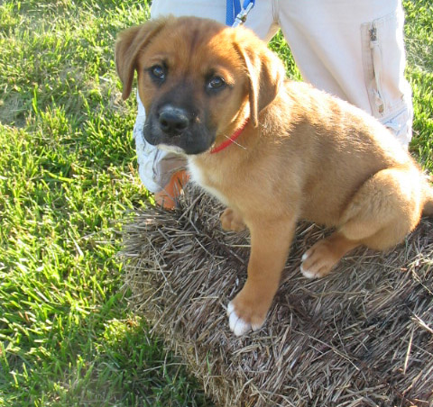

Services
We offer a wide variety of services at Friends with Paws. In addition to adopting pets, you can volunteer, foster an animal, see the vet, and even get your pet groomed. However, due to our small staff, we require appointments to be made ahead of time for most of our services. You can do so by calling our office at 401-123-4567 or emailing us with the requested service in the subject line. Below are some of our services:
| Service | Cost | Appointment Needed |
|---|---|---|
| Vet appointment | $50 | Yes |
| Yearly/Routine shots | $25-$60 | Yes |
| Non-routine shots | $40-$80 | Yes |
| Surgeries | Varies | Yes |
| Groomers | $30-$70 | Yes |
| Adoption | Varies | No |
Foster a pet
Need to surrender a pet?
There are many reasons why you may need to give up your pet. We're not here to judge. Giving up your pet can be a very difficult decision, and we're here to provide a safe place for you to take them.
We a Surrender My Pet information packet available for you to look over. If you decide this is the right choice for you, please fill out the the attached form and return it in person to our front desk.
Have a question? Call us at 401-123-4567 or email us. We are happy to help you with any questions or concerns you may have about this process.
We take in a lot of rescues at our shelter. Sadly, they don't always come to us in the best condition. These animals often need extra care and attention before they can be adopted. That's where are foster homes come in.
In foster homes, these animals can be rehabilitated to be family pets. Foster "parents" work the animal to get them comfortable around people and work on behavior training. This experience also allows to figure out the best type of forever home for these animals.
If you are interested in becoming a foster parent, please fill read and fill out our Foster Pet Parent application and drop it off at our office at your earliest convenience. We aim to keep costs low for our foster families, so food, medical services, some pet supplies are provided by the shelter. You are welcome to buy your own supplies for your foster pet.